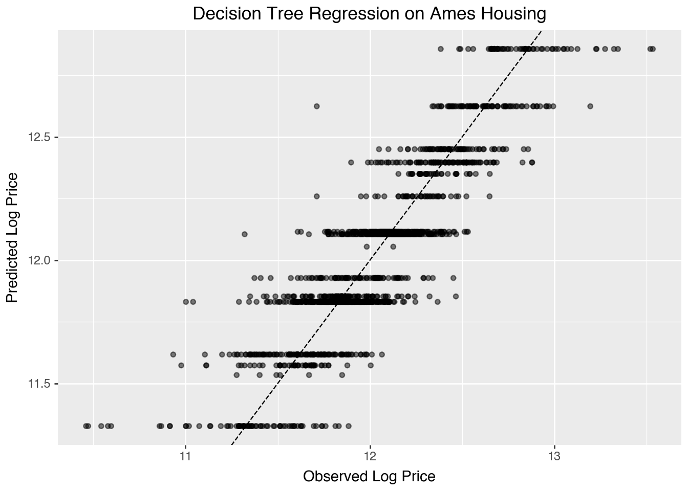
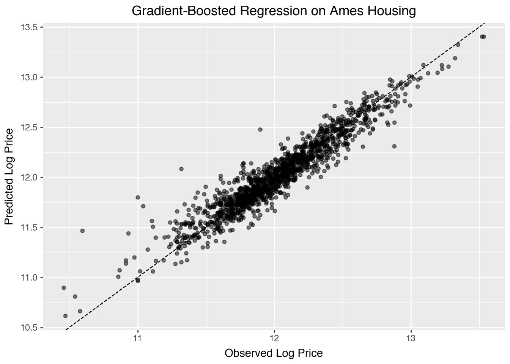

import openml
import pandas as pd
import numpy as np
# Load Ames Housing dataset (OpenML ID 42165)
dataset = openml.datasets.get_dataset(42165)
df, *_ = dataset.get_data()
df["LogPrice"] = np.log(df["SalePrice"])10 Supervised Learning
10.1 Decision Trees
Decision trees are widely used supervised learning models that predict the value of a target variable by iteratively splitting the dataset based on decision rules derived from input features. The model functions as a piecewise constant approximation of the target function, producing clear, interpretable rules that are easily visualized and analyzed (Breiman et al., 1984). Decision trees are fundamental in both classification and regression tasks, serving as the building blocks for more advanced ensemble models such as Random Forests and Gradient Boosting Machines.
10.1.1 Recursive Partition Algorithm
The core mechanism of a decision tree algorithm is the identification of optimal splits that partition the data into subsets that are increasingly homogeneous with respect to the target variable. At any node \(m\), the data subset is denoted as \(Q_m\) with a sample size of \(n_m\). The objective is to find a candidate split \(\theta\), defined as a threshold for a given feature, that minimizes an impurity or loss measure \(H\).
When a split is made at node \(m\), the data is divided into two subsets: \(Q_{m,l}\) (left node) with sample size \(n_{m,l}\), and \(Q_{m,r}\) (right node) with sample size \(n_{m,r}\). The split quality, measured by \(G(Q_m, \theta)\), is given by:
\[ G(Q_m, \theta) = \frac{n_{m,l}}{n_m} H(Q_{m,l}(\theta)) + \frac{n_{m,r}}{n_m} H(Q_{m,r}(\theta)). \]
The algorithm aims to identify the split that minimizes the impurity:
\[ \theta^* = \arg\min_{\theta} G(Q_m, \theta). \]
This process is applied recursively at each child node until a stopping condition is met.
- Stopping Criteria: The algorithm stops when the maximum tree depth is reached or when the node sample size falls below a preset threshold.
- Pruning: Reduce the complexity of the final tree by removing branches that add little predictive value. This reduces overfitting and improves generalization.
10.1.2 Search Space for Possible Splits
At each node, the search space for possible splits comprises all features in the dataset and potential thresholds derived from the feature values. For a given feature, the algorithm considers each of its unique value in the current node as a possible split point. The potential thresholds are typically set as midpoints between consecutive unique values, ensuring effective partition.
Formally, let the feature set be \(\{X_1, X_2, \ldots, X_p\}\), where \(p\) is the total number of features, and let the unique values of feature \(X_j\) at node \(m\) be denoted by \(\{v_{m,j,1}, v_{m,j,2}, \ldots, v_{m,j,k_{mj}}\}\). The search space at node \(m\) includes:
- Feature candidates: \(\{X_1, X_2, \ldots, X_p\}\).
- Threshold candidates for \(X_j\): \[ \left\{ \frac{v_{m,j,i} + v_{m,j,i+1}}{2} \mid 1 \leq i < k_{mj} \right\}. \]
While the complexity of this search can be substantial, particularly for high-dimensional data or features with numerous unique values, efficient algorithms use sorting and single-pass scanning techniques to mitigate the computational cost.
10.1.3 Metrics
10.1.3.1 Classification
In classification, the split quality metric measures how pure the resulting nodes are after a split. A pure node contains observations that predominantly belong to a single class.
Gini Index: The Gini index measures node impurity by the probability that two observations randomly drawn from the node belong to different classes. A perfect split (all instances belong to one class) has a Gini index of 0. At node \(m\), the Gini index is \[ H(Q_m) = \sum_{k=1}^{K} p_{mk} (1 - p_{mk}) = 1 - \sum_{k=1}^n p_{mk}^2, \] where \(p_{mk}\) is the proportion of samples of class \(k\) at node \(m\); and \(K\) is the total number of classes The Gini index is often preferred for its speed and simplicity, and it’s used by default in many implementations of decision trees, including
sklearn.The Gini index originates from the Gini coefficient, introduced by Corrado Gini in 1912 to quantify inequality in income distributions. In that context, the Gini coefficient measures how unevenly a quantity (such as wealth) is distributed across a population. Decision tree algorithms adapt this concept of inequality to measure the impurity of a node: instead of wealth, the distribution concerns class membership. A perfectly pure node, where all observations belong to the same class, represents complete equality and yields a Gini index of zero. As class proportions become more mixed, inequality in class membership increases, leading to higher impurity values. Thus, the Gini index used in decision trees can be viewed as a statistical measure of diversity or heterogeneity derived from Gini’s original work on inequality.
Entropy (Information Gain): Derived from information theory, entropy quantifies the disorder of the data at a node. Lower entropy means higher purity. At node \(m\), it is defined as \[ H(Q_m) = - \sum_{k=1}^{K} p_{mk} \log p_{mk}. \] Entropy is commonly used in decision tree algorithms like ID3 and C4.5. The choice between Gini and entropy often depends on specific use cases, but both perform similarly in practice.
Misclassification Error: Misclassification error focuses on the most frequent class in the node. It measures the proportion of samples that do not belong to the majority class. Although less sensitive than Gini and entropy, it can be useful for classification when simplicity is preferred. At node \(m\), it is defined as \[ H(Q_m) = 1 - \max_k p_{mk}, \] where \(\max_k p_{mk}\) is the largest proportion of samples belonging to any class \(k\).
10.1.3.2 Regression Criteria
In regression, the goal is to minimize the spread or variance of the target variable within each node.
Mean Squared Error (MSE): MSE is the average squared difference between observed and predicted values (mean of the target in the node). The smaller the MSE, the better the fit. At node \(m\), it is \[ H(Q_m) = \frac{1}{n_m} \sum_{i=1}^{n_m} (y_i - \bar{y}_m)^2, \] where
- \(y_i\) is the actual value for sample \(i\);
- \(\bar{y}_m\) is the mean value of the target at node \(m\);
- \(n_m\) is the number of samples at node \(m\).
MSE works well when the target is continuous and normally distributed.
Half Poisson Deviance: Used for count target, the Poisson deviance measures the variance in the number of occurrences of an event. At node \(m\), it is \[ H(Q_m) = \sum_{i=1}^{n_m} \left( y_i \log\left(\frac{y_i}{\hat{y}_i}\right) - (y_i - \hat{y}_i) \right), \] where \(\hat{y}_i\) is the predicted count. This criterion is especially useful when the target variable represents discrete counts, such as predicting the number of occurrences of an event.
Mean Absolute Error (MAE): MAE aims to minimize the absolute differences between actual and predicted values. While it is more robust to outliers than MSE, it is slower computationally due to the lack of a closed-form solution for minimization. At node \(m\), it is \[ H(Q_m) = \frac{1}{n_m} \sum_{i=1}^{n_m} |y_i - \bar{y}_m|. \] MAE is useful when you want to minimize large deviations and can be more robust in cases where outliers are present in the data.
10.1.4 Ames Housing Example
The Ames Housing data are used to illustrate a regression tree model for predicting log house price.
As before, we retrive the data from OpenML.
A decision tree partitions the feature space into regions where the average log price is relatively constant.
from sklearn.compose import ColumnTransformer
from sklearn.preprocessing import OneHotEncoder
from sklearn.tree import DecisionTreeRegressor
from sklearn.model_selection import cross_val_score
from sklearn.pipeline import Pipeline
import plotnine as gg
import pandas as pd
numeric_features = [
"OverallQual", "GrLivArea", "GarageCars",
"TotalBsmtSF", "YearBuilt", "FullBath"
]
categorical_features = ["KitchenQual"]
preprocessor = ColumnTransformer([
("num", "passthrough", numeric_features),
("cat", OneHotEncoder(drop="first"), categorical_features)
])
X = df[numeric_features + categorical_features]
y = df["LogPrice"]
depths = range(2, 11)
cv_scores = [
cross_val_score(
Pipeline([
("pre", preprocessor),
("model", DecisionTreeRegressor(max_depth=d, random_state=0))
]),
X, y, cv=5, scoring="r2"
).mean()
for d in depths
]
list(zip(depths, cv_scores))[(2, np.float64(0.594134995704976)),
(3, np.float64(0.6712972027857058)),
(4, np.float64(0.7141792234890973)),
(5, np.float64(0.748794485599919)),
(6, np.float64(0.7587964739851765)),
(7, np.float64(0.7343953839481492)),
(8, np.float64(0.7186324525934304)),
(9, np.float64(0.7112790937242873)),
(10, np.float64(0.6938966980572193))]Cross-validation identifies an appropriate tree depth that balances fit and generalization. A too-deep tree overfits, while a shallow tree misses structure.
dt = Pipeline([
("pre", preprocessor),
("model", DecisionTreeRegressor(max_depth=4, random_state=0))
])
dt.fit(X, y)
y_pred = dt.predict(X)
df_pred = pd.DataFrame({"Observed": y, "Predicted": y_pred})
(gg.ggplot(df_pred, gg.aes(x="Observed", y="Predicted")) +
gg.geom_point(alpha=0.5) +
gg.geom_abline(slope=1, intercept=0, linetype="dashed") +
gg.labs(title="Decision Tree Regression on Ames Housing",
x="Observed Log Price", y="Predicted Log Price"))
The plot shows predicted versus observed log prices. A well-fitted model has points close to the diagonal. The decision tree naturally captures nonlinear effects and interactions, though its predictions are piecewise constant, producing visible step patterns.
10.2 Gradient-Boosted Models
Gradient boosting is a powerful ensemble technique in machine learning that combines multiple weak learners into a strong predictive model. Unlike bagging methods, which train models independently, gradient boosting fits models sequentially, with each new model correcting errors made by the previous ensemble (Friedman, 2001). While decision trees are commonly used as weak learners, gradient boosting can be generalized to other base models. This iterative method optimizes a specified loss function by repeatedly adding models designed to reduce residual errors.
10.2.1 Introduction
Gradient boosting builds on the general concept of boosting, aiming to construct a strong predictor from an ensemble of sequentially trained weak learners. The weak learners are often shallow decision trees (stumps), linear models, or generalized additive models (Hastie et al., 2009). Each iteration adds a new learner focusing primarily on the data points poorly predicted by the existing ensemble, thereby progressively enhancing predictive accuracy.
Gradient boosting’s effectiveness stems from:
- Error Correction: Each iteration specifically targets previous errors, refining predictive accuracy.
- Weighted Learning: Iteratively focuses more heavily on difficult-to-predict data points.
- Flexibility: Capable of handling diverse loss functions and various types of predictive tasks.
The effectiveness of gradient-boosted models has made them popular across diverse tasks, including classification, regression, and ranking. Gradient boosting forms the foundation for algorithms such as XGBoost (Chen & Guestrin, 2016), LightGBM (Ke et al., 2017), and CatBoost (Prokhorenkova et al., 2018), known for their high performance and scalability.
10.2.2 Gradient Boosting Process
Gradient boosting builds an ensemble by iteratively minimizing the residual errors from previous models. This iterative approach optimizes a loss function, \(L(y, F(x))\), where \(y\) represents the observed target variable and \(F(x)\) the model’s prediction for a given feature vector \(x\).
Key concepts:
- Loss Function: Guides model optimization, such as squared error for regression or logistic loss for classification.
- Learning Rate: Controls incremental updates, balancing training speed and generalization.
- Regularization: Reduces overfitting through tree depth limitation, subsampling, and L1/L2 penalties.
10.2.2.1 Model Iteration
The gradient boosting algorithm proceeds as follows:
Initialization: Define a base model \(F_0(x)\), typically the mean of the target variable for regression or the log-odds for classification.
Iterative Boosting: At each iteration \(m\):
Compute pseudo-residuals representing the negative gradient of the loss function at the current predictions. For each observation \(i\): \[ r_i^{(m)} = -\left.\frac{\partial L(y_i, F(x_i))}{\partial F(x_i)}\right|_{F(x)=F_{m-1}(x)}, \] where \(x_i\) and \(y_i\) denote the feature vector and observed value for the \(i\)-th observation, respectively. The residuals represent the direction of steepest descent in function space, so fitting a learner to them approximates a gradient descent step minimizing \(L(y, F(x))\).
Fit a new weak learner \(h_m(x)\) to these residuals.
Update the model: \[ F_m(x) = F_{m-1}(x) + \eta \, h_m(x), \] where \(\eta\) is a small positive learning rate (e.g., 0.01–0.1), controlling incremental improvement and reducing overfitting.
In some implementations, the update step includes an additional multiplier determined by a one-dimensional line search that minimizes the loss function at each iteration. Specifically, the optimal step length is defined as \[ \gamma_m = \arg\min_\gamma \sum_{i=1}^n L\bigl(y_i,\, F_{m-1}(x_i) + \gamma\, h_m(x_i)\bigr), \] leading to an updated model of the form [ F_m(x) = F_{m-1}(x) + , _m, h_m(x), ] where \(\eta\) remains a shrinkage factor controlling the overall rate of learning, while \(\gamma_m\) adjusts the step size adaptively at each iteration.
Final Model: After \(M\) iterations, the ensemble model is: \[ F_M(x) = F_0(x) + \sum_{m=1}^M \eta \, h_m(x). \]
Stochastic gradient boosting is a variant that enhances gradient boosting by introducing randomness through subsampling at each iteration, selecting a random fraction of data points (typically 50%–80%) to fit the model . This randomness helps reduce correlation among trees, improve model robustness, and lower the risk of overfitting.
10.2.3 Boosted Trees with Ames Housing
Boosted trees apply the gradient boosting framework to decision trees. They build an ensemble of shallow trees, each trained to correct the residual errors of the preceding ones. By sequentially emphasizing observations that are difficult to predict, the model progressively improves its overall predictive accuracy. We now apply gradient boosting using the same preprocessed features. Boosting combines many shallow trees, each correcting the residual errors of its predecessors, to improve predictive accuracy.
from sklearn.ensemble import GradientBoostingRegressor
# Define a range of tree counts for tuning
n_estimators_list = [50, 100, 200, 400]
cv_scores_gb = [
cross_val_score(
Pipeline([
("pre", preprocessor),
("model", GradientBoostingRegressor(
n_estimators=n,
learning_rate=0.05,
max_depth=3,
random_state=0))
]),
X, y, cv=5, scoring="r2"
).mean()
for n in n_estimators_list
]
list(zip(n_estimators_list, cv_scores_gb))[(50, np.float64(0.8199019428994425)),
(100, np.float64(0.8437789746745888)),
(200, np.float64(0.8451433195728157)),
(400, np.float64(0.8405078307788265))]Cross-validation shows how increasing the number of boosting rounds initially improves performance but eventually risks overfitting when too many trees are added.
gb = Pipeline([
("pre", preprocessor),
("model", GradientBoostingRegressor(
n_estimators=200,
learning_rate=0.05,
max_depth=3,
random_state=0))
])
gb.fit(X, y)
y_pred_gb = gb.predict(X)
df_pred_gb = pd.DataFrame({"Observed": y, "Predicted": y_pred_gb})
(gg.ggplot(df_pred_gb, gg.aes(x="Observed", y="Predicted")) +
gg.geom_point(alpha=0.5) +
gg.geom_abline(slope=1, intercept=0, linetype="dashed") +
gg.labs(title="Gradient-Boosted Regression on Ames Housing",
x="Observed Log Price", y="Predicted Log Price"))
The boosted model produces predictions that are generally closer to the 45-degree line than a single tree, reflecting improved accuracy and smoother response across the feature space.
Gradient-boosted trees introduce several parameters that govern model complexity, learning stability, and overfitting control:
n_estimators: the number of trees (boosting rounds). More trees can reduce bias but increase computation and risk of overfitting. learning_rate — the shrinkage parameter \(\eta\) controlling the contribution of each new tree. Smaller values (e.g., 0.05 or 0.01) require more trees but often yield better generalization.max_depth: the maximum depth of each individual tree, limiting the model’s ability to overfit local noise. Shallow trees (depth 2–4) are typical weak learners.subsample: the fraction of data used in each iteration. Values below 1.0 introduce randomness (stochastic boosting), improving robustness and reducing correlation among trees.min_samples_splitandmin_samples_leaf: minimum numbers of observations required for splitting or forming leaves. These control tree granularity and help regularize the model.
In practice, moderate learning rates with a sufficiently large number of estimators and shallow trees often perform best, balancing bias, variance, and computational cost.
10.2.4 XGBoost: Extreme Gradient Boosting
XGBoost is a scalable and efficient implementation of gradient-boosted decision trees (Chen & Guestrin, 2016). It has become one of the most widely used machine learning methods for structured data due to its high predictive performance, regularization capabilities, and speed. XGBoost builds an ensemble of decision trees in a stage-wise fashion, minimizing a regularized objective that balances training loss and model complexity.
The core idea of XGBoost is to fit each new tree to the gradient of the loss function with respect to the model’s predictions. Unlike traditional boosting algorithms like AdaBoost, which use only first-order gradients, XGBoost optionally uses second-order derivatives (Hessians), enabling better convergence and stability (Friedman, 2001).
XGBoost is widely used in data science competitions and real-world applications. It supports regularization (L1 and L2), handles missing values internally, and is designed for distributed computing.
XGBoost builds upon the same foundational idea as gradient boosted machines—sequentially adding trees to improve the predictive model— but introduces a number of enhancements:
| Aspect | Traditional GBM | XGBoost |
|---|---|---|
| Implementation | Basic gradient boosting | Optimized, regularized boosting |
| Regularization | Shrinkage only | L1 and L2 regularization |
| Loss Optimization | First-order gradients | First- and second-order |
| Missing Data | Requires manual imputation | Handled automatically |
| Tree Construction | Depth-wise | Level-wise (faster) |
| Parallelization | Limited | Built-in |
| Sparsity Handling | No | Yes |
| Objective Functions | Few options | Custom supported |
| Cross-validation | External via GridSearchCV |
Built-in xgb.cv |
XGBoost is therefore more suitable for large-scale problems and provides better generalization performance in many practical tasks.